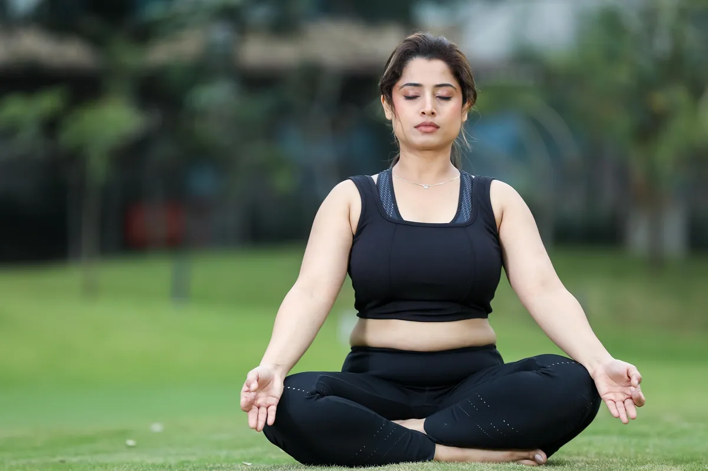
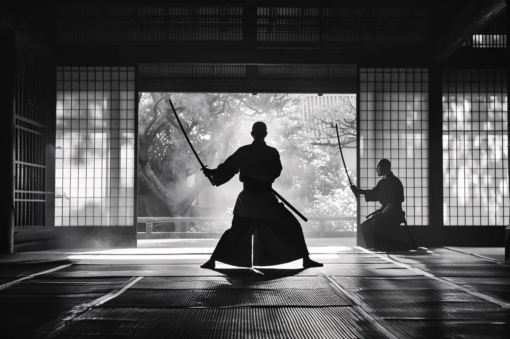
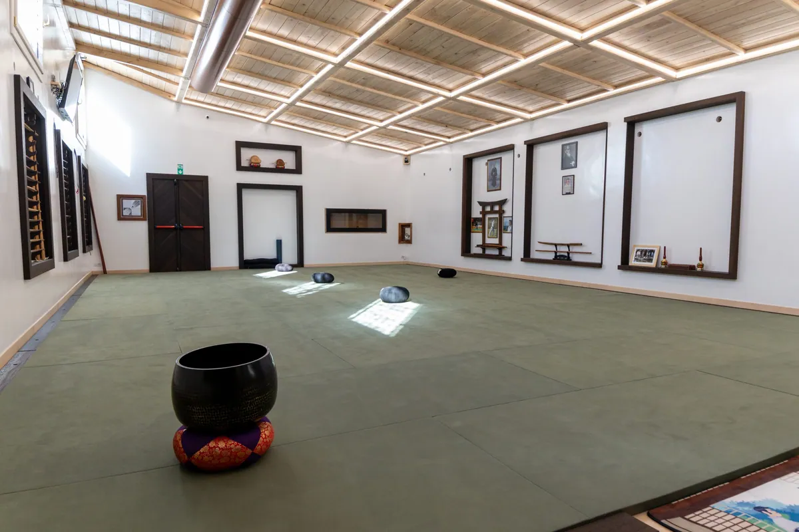
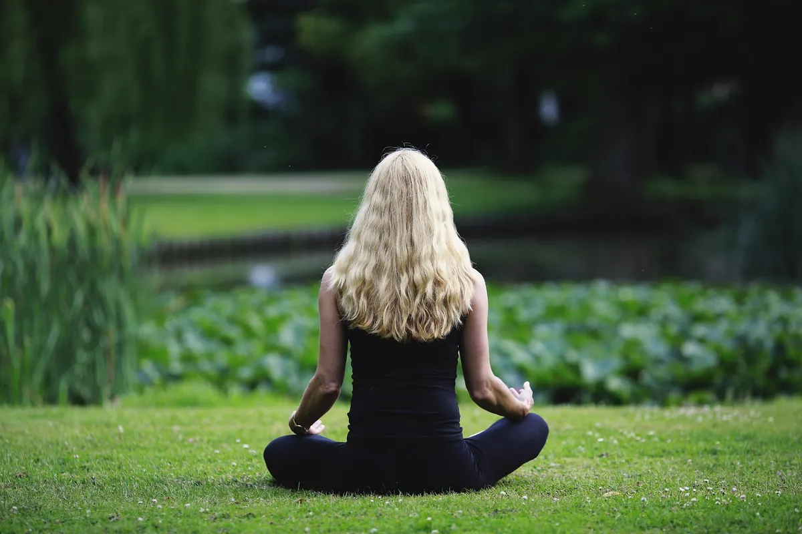
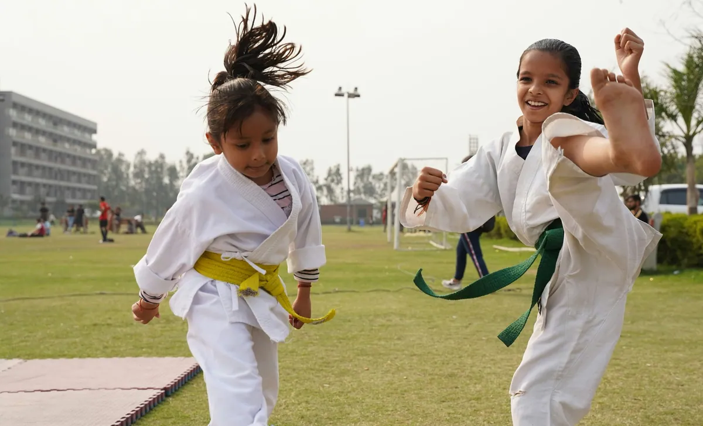
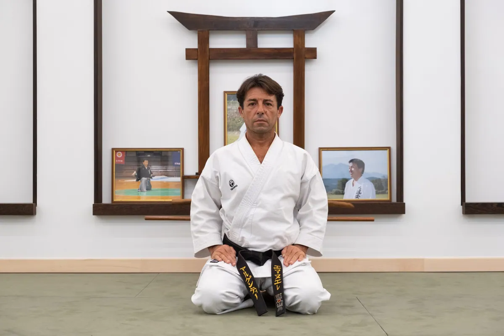
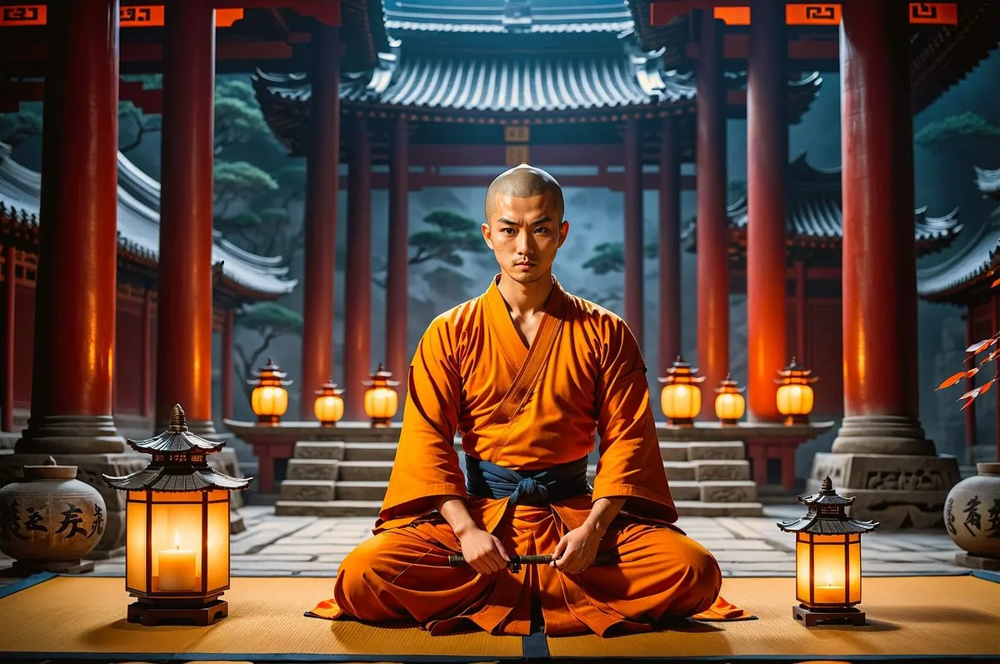
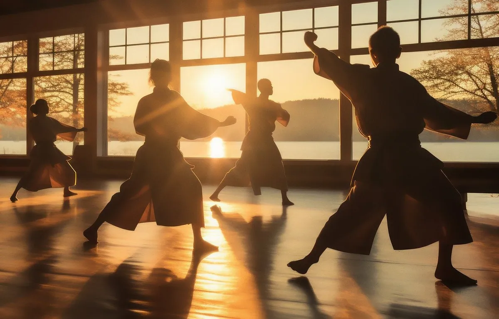
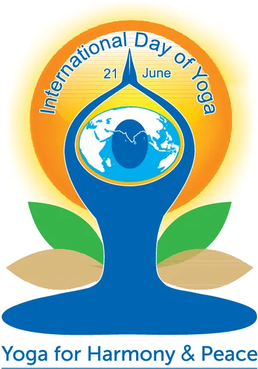
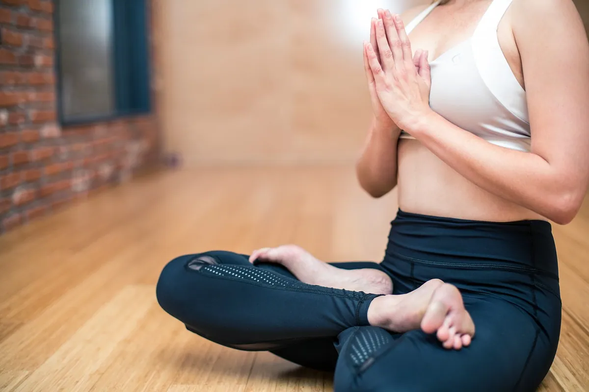

Pranavia Dojo Blog
Nel blog del Pranavia Dojo troverai interessanti articoli sulle arti marziali e sulle altre discipline incentrate sul benessere fisico e mentale praticate nel dojo.
-

L’importanza delle Asana nello Yoga
Quando pensiamo allo yoga, è probabile che la prima immagine che ci viene in mente sia quella di qualcuno che esegue una Asana. Eppure le Asana sono molto più di semplici posizioni.
-

Il Sensei: Guida, Maestro e Mentore
Nel mondo delle arti marziali, il Sensei è una figura centrale, un punto di riferimento per gli allievi e un custode della tradizione. Il termine giapponese per "Sensei" significa letteralmente "colui che è nato prima".
-

Etichetta e Tradizioni nel Dojo
Nel dojo, l’etichetta è essenziale: rappresenta rispetto, disciplina e umiltà. Ogni praticante deve seguire precise regole, a partire dal rei (inchino) all’ingresso, simbolo di gratitudine verso il luogo e i compagni.
-

Tecniche di respirazione: Il cuore delle discipline del benessere e delle arti marziali
La respirazione è uno degli atti più semplici e naturali del corpo umano, eppure raramente le diamo la giusta attenzione. Saper respirare correttamente può trasformare non solo la qualità della nostra pratica sportiva ma anche della nostra vita quotidiana.
-

Dal dojo alla vita: i benefici delle arti marziali per i più piccoli
La pratica delle arti marziali per i bambini è un’opportunità preziosa per sviluppare abilità fisiche, come coordinazione e forza, e qualità personali…
-

Il Sensei Emanuele Argentino si racconta
Il Sensei Emanuele Argentino inizia la pratica del Karate Do all’età di 5 anni attraverso lo studio dello stile WadoRyu fino al conseguimento della qualifica di Istruttore 4° Dan della federazione Fijlkam.
-
Pilates in Gravidanza
La tecnica Pilates nasce per migliorare la postura attraverso l’insegnamento di un uso corretto dei muscoli del proprio corpo. Anche nel caso di una gravidanza, evento meraviglioso e naturale da vivere con la massima serenità, tale obiettivo rimane prioritario nel programma di allenamento che prenderà in considerazione le tre fasi principali della gestazione (primo, secondo e terzo trimestre di gravidanza), proponendo, più che programmi differenziati, delle varianti diverse e specifiche rispetto al repertorio base.
-

Arti Marziali: origini e spiritualità
Le arti marziali non sono solo tecniche di combattimento, ma rappresentano anche un insieme di valori, discipline e pratiche che influenzano profondamente lo stile di vita dei praticanti. Vediamo come queste influenze si manifestano sia storicamente che nell'era moderna.
-

Le cinture nel Karate
Le cinture nel karate non sono soltanto fasce di tessuto colorato che tengono insieme il gi, ma sono simboli ricchi di storia, tradizione e significato. Ogni colore rappresenta un livello di competenza e impegno raggiunto dal praticante nel percorso di apprendimento e crescita nel karate.
-

La nascita del Karate
La nascita del karate, risalente ai tempi antichi, rappresenta un capitolo affascinante nella storia delle arti marziali. Con le sue radici che si estendono fino all'isola di Okinawa nel XVII secolo, il karate ha attraversato un percorso ricco di sviluppi culturali e storici.
-

Yoga Day, la giornata internazionale dello Yoga
Ogni anno, il 21 giugno, il mondo si unisce per celebrare la Giornata Internazionale dello Yoga, un evento che promuove la salute, il benessere e la…
-

I benefici dello Yoga
Lo yoga è molto più di una serie di pose fisiche; è un sistema completo che mira a unire mente, corpo e spirito attraverso la pratica di asana (pose), pranayama (respirazione) e meditazione. Con una storia che risale a migliaia di anni fa nell'antica India, lo yoga continua a essere una pratica ampiamente adottata in tutto il mondo per i suoi numerosi benefici per la salute e il benessere.